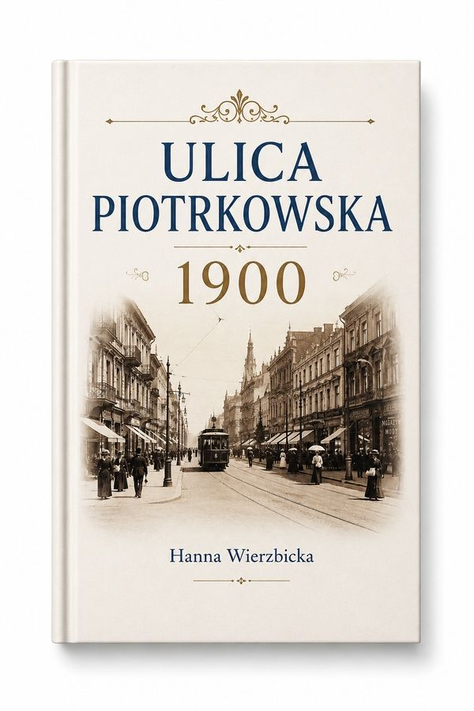
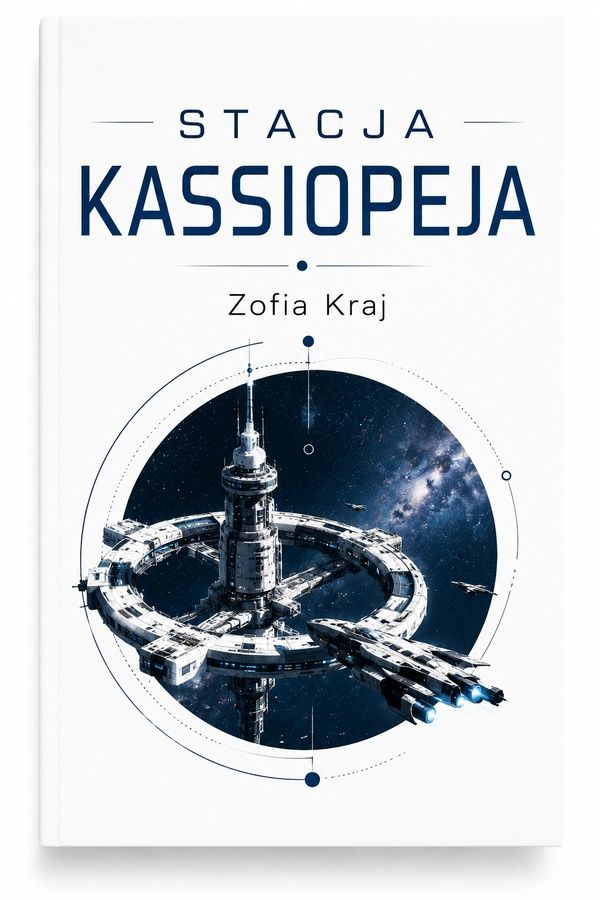
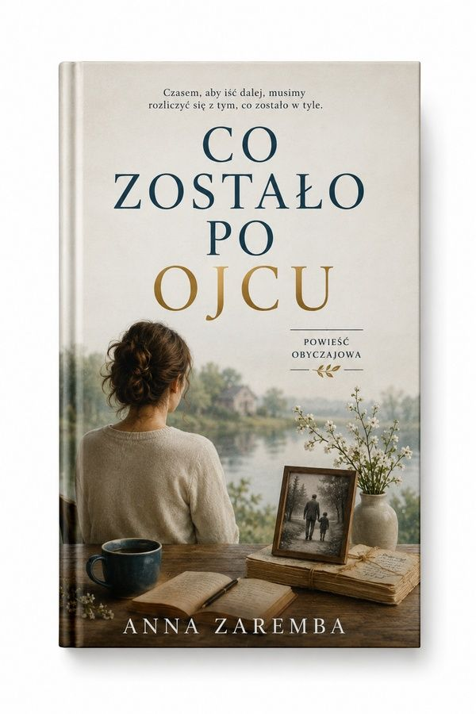
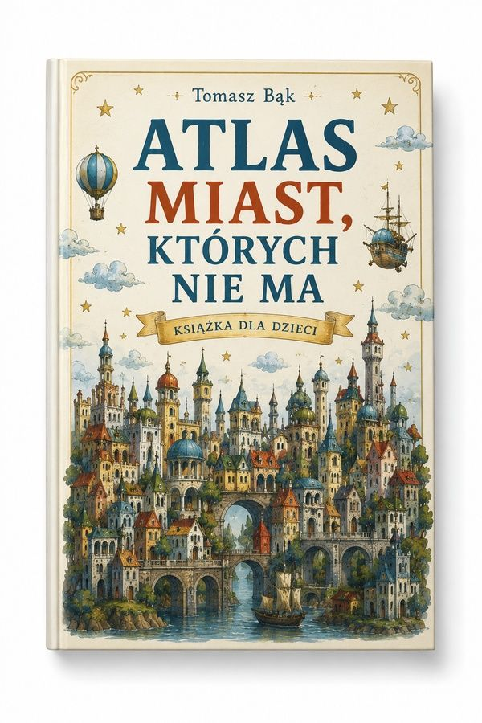
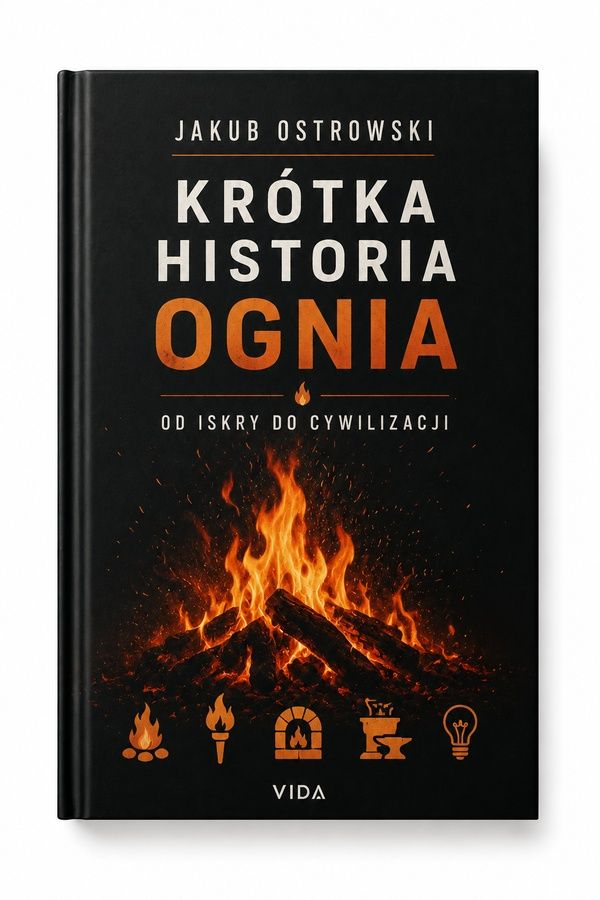
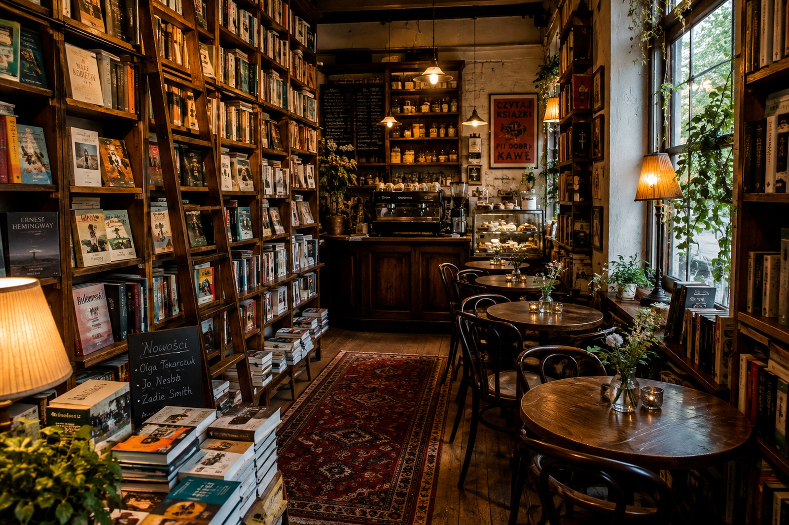

Poczytać
Zdjąć książkę z półki, usiąść przy oknie i przeczytać trzydzieści stron. Bez kupowania, bez tłumaczenia się.
Księgarnia z kawiarnią
Jesteśmy jednym miejscem, nie dwoma. Kawa jest po to, żeby dało się tu siedzieć, a książki po to, żeby było po co przychodzić. Nikt nie stoi nad Wami z rachunkiem.
Co tu można
Nie dzielimy się na dział z książkami i dział z kawą. Ludzie przychodzą po różne rzeczy i wszystkie da się tu zrobić naraz.
Zdjąć książkę z półki, usiąść przy oknie i przeczytać trzydzieści stron. Bez kupowania, bez tłumaczenia się.
Około czterech tysięcy tytułów. Czego nie ma, sprowadzamy w dwa, trzy dni i odkładamy pod nazwiskiem.
Sześć stolików, gniazdka przy czterech, wi-fi bez hasła. Rano bywa pusto, po piętnastej robi się gwarno.
Klub czytelniczy, spotkania z autorami, czytanie dla dzieci w soboty. Prawie wszystko bezpłatne.
Półka miesiąca
Leżą na stole przy wejściu, przy każdej karteczka z odręczną notką. To są te notki, przepisane. Nie łączy ich temat — łączy je to, że sami je przeczytaliśmy.

Hanna Wierzbicka
Fotografie z czasów, gdy pod naszym numerem był zakład szewski. Widać go na stronie 84.— Marta
68 zł
Zofia Kraj
Fantastyka bez wojen kosmicznych — cała rzecz dzieje się w jednym korytarzu i trzyma do końca.— Piotr
52 złMarek Lis
Kryminał, po którym trzeba zapalić światło w przedpokoju. Ostrzegam uczciwie.— Marta
45 zł
Anna Zaremba
Powieść o dzieleniu domu po pogrzebie. Płakałem w tramwaju, nie polecam czytać publicznie.— Piotr
49 zł
Tomasz Bąk
Dla dzieci, ale dorośli siedzą nad tym dłużej. Sprawdzone na własnym mężu.— Marta
72 zł
Jakub Ostrowski
Od pierwszej iskry do żarówki. Wciąga tak, że zapomina się, że to nauka.— Piotr
59 złWydarzenia
Zapisy nie są konieczne poza klubem czytelniczym i warsztatami — tam liczba miejsc jest ograniczona wielkością stołu.
Czytamy „Co zostało po ojcu" Anny Zaremby. Kto nie zdążył przeczytać, też może przyjść — nikt nie sprawdza.
Pół godziny czytania na dywanie, dla dzieci od 4 do 8 lat. Rodzice mogą wypić kawę obok.
Rozmowa o „Krótkiej historii ognia" i o tym, ile cywilizacji zawdzięcza jednej iskrze. Po spotkaniu podpisywanie.
Szycie prostego notesu w twardej oprawie. Materiały w cenie, wychodzi się z gotowym zeszytem.
Tytuł wybieramy wspólnie na wrześniowym spotkaniu. Ogłaszamy go na drzwiach i tutaj.
Kawiarnia
Kawa z palarni na Kilińskiego, ciasta z cukierni dwie ulice dalej. Nic nie robimy sami i nie udajemy, że robimy.

Sześć stolików i regały do sufitu. Drabina jest sprawna i wolno z niej korzystać.
O nas
Marta prowadziła wcześniej dział książki w domu kultury, Piotr parzył kawę w trzech różnych miejscach w Łodzi. W pewnym momencie okazało się, że oboje chcemy tego samego.
Nie mamy sklepu internetowego i nie planujemy. Zamiast tego można zadzwonić — odkładamy książkę na tydzień pod nazwiskiem, bez zaliczki.
Regały robił stolarz ze Zgierza, z drewna z rozbiórki fabryki przy Wólczańskiej. Deski były w podłodze przez sto lat, więc pachną inaczej niż nowe.
Godziny i dojazd
Wejście bez schodków, drzwi szerokie. W środku jest ciasno między regałami, ale wózkiem da się przejechać do stolików przy oknie.